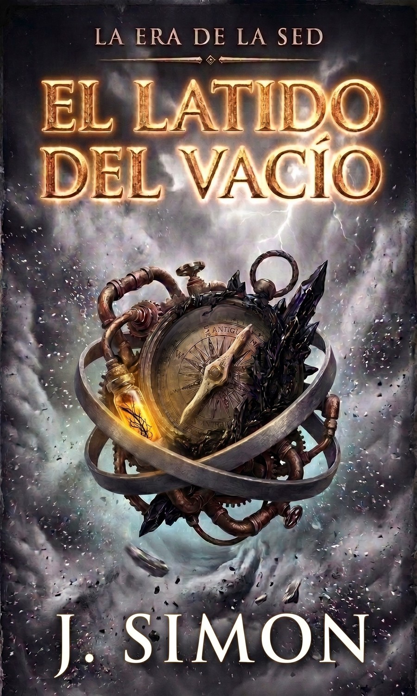

Aremar no está viva, pero insiste en latir.
Aremar no está viva, pero insiste en latir.
En un mundo impulsado por el Flujo, una energía que alimenta ciudades eternas y tecnología de vapor, la realidad comienza a fracturarse. Mientras las élites de Aurea ignoran el agotamiento del motor del mundo, Tael —un paria sin capacidad para sentir la energía— es el único que puede escuchar el agónico chirrido de los cimientos.
Lo que empieza como un trabajo rutinario en las cloacas del Sector Bajo pronto se convierte en una carrera desesperada contra el colapso. Junto a un grupo de inadaptados, Tael descubrirá que su vacío no es una carencia, sino la única señal de aviso ante una resonancia oscura que emerge del Sur para reclamar el silencio absoluto.
El motor se agota. La Era de la Sed ha comenzado.
¿Qué precio estás dispuesto a pagar para mantener las luces encendidas?
Alimenta las ciudades eternas y la tecnología de vapor. El motor del mundo se está agotando y las élites de Aurea prefieren no escucharlo.
Un paria sin capacidad para sentir la energía. Por eso mismo es el único que oye el chirrido de los cimientos.
Una resonancia oscura emerge para reclamar el silencio absoluto. Desde las cloacas del Sector Bajo empieza la carrera contra el colapso.
El booktrailer de El Latido del Vacío está en el Instagram del autor.
Ver el booktrailerJ. Simon nació en Alicante. Desde joven, su imaginación encontró refugio en la narrativa especulativa y en el teatro, dos mundos donde las identidades se desdibujan y las verdades se ponen a prueba.
Formado en el ámbito tecnológico, Simon combina su labor profesional con la escritura de ficción, moviéndose con naturalidad entre algoritmos y personajes, entre el código y la conciencia. Esta doble mirada —crítica y poética— alimenta un universo narrativo profundamente marcado por preguntas sobre la identidad, la memoria y los límites entre lo real y lo simulado.
El Proyecto Despertar es su primera novela publicada y el inicio de la saga El Último Eco, una exploración sobre qué queda de nosotros cuando el cuerpo desaparece, pero la mente insiste en recordar. Una historia que no pregunta si sobreviviremos a la muerte, sino si seremos aún humanos cuando lo hagamos.
Con su segunda novela, El Latido del Vacío, aborda temas de rabiosa actualidad social, envueltos en una historia de fantasía con personajes que amarás u odiarás.
Sigue a J. Simon en sus redes.